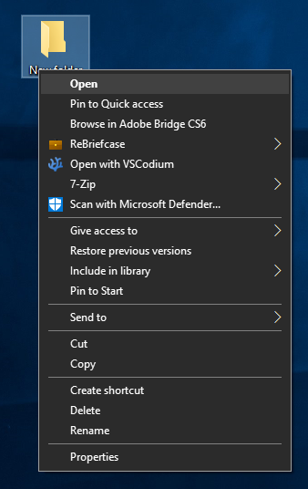

ReBriefcase
Windows Briefcases, Reborn


About ReBriefcase
ReBriefcase is a small piece of software made to replicate the functionality of the briefcasese seen in Windows 7.
I chose to make ReBriefcase because I used Windows 7 Briefcases, and Microsoft decided to phase it out, and even removing it in later Windows 10 builds.
I have found other replicas online, but they tended to only bring back their look in Explorer, but left out the sync engine, and required messing with system files.
ReBriefcase does not touch system files, and can be installed like a normal program. It also has a sync engine, which is the whole point of briefcases.
Known Bugs
As far as I know ReBriefcase is bug free.
Found a bug? Report it on ReBriefcase's GitHub repo. You can find my GitHub in the contacts page.
Disclaimer
ReBriefcase is still considered "Beta" software. While known bugs have been ironed out, bugs can very well still exist. It is reccomended you keep a backup of your data when using ReBriefcase, and I am not responsible for any data loss you may encounter when using it.
It was 4am when I got to remaking this part, I was very tired, and just copied-pasted the html from the old site. Give me a little while to make this section better please
Installing ReBriefcase
Installing ReBriefcase is as easy as clicking through the installer, no restart or signout is required to install rebriefcase.
After installing ReBriefcase, a new button will apear in your context menu when you click on folders. This button is how you use ReBreifcase

How to use ReBriefcase

The way ReBriefcase works is it turns folders into briefcases. These "briefcases" however, are still folders, they just have metadata and an icon embedded. This lets you use ReBriefcase briefcases fairly similarly to Windows briefcases.
The sync engine
ReBriefcase has two sync engines. "Safe" and "Unsafe"

Conflict detection

The ReBriefcase conflict detection window differs greatly compared to the Windows briefcase conflict detection window. The goal was to make it easier to use quickly, and to make it more intuitive for causual users.